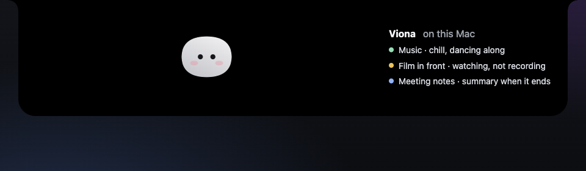
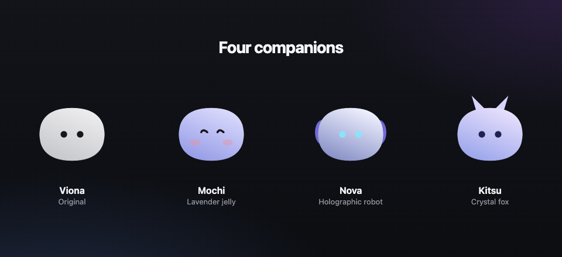
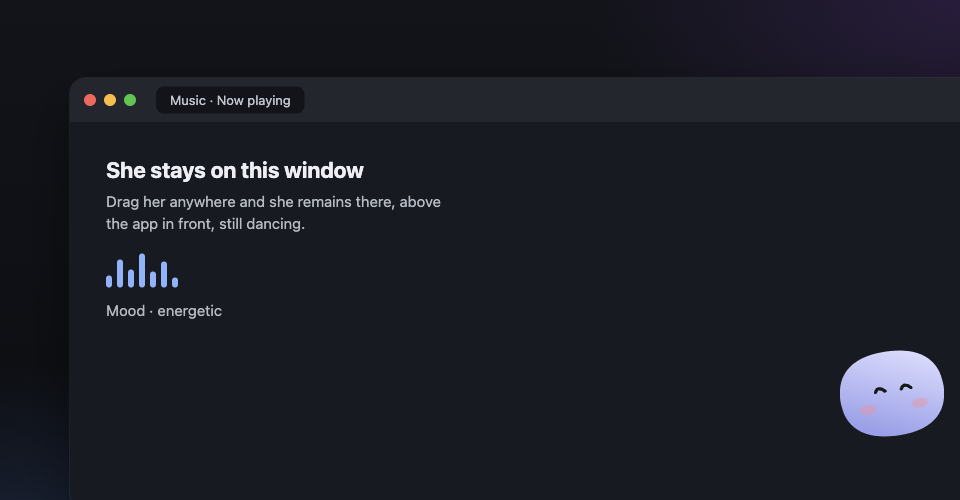
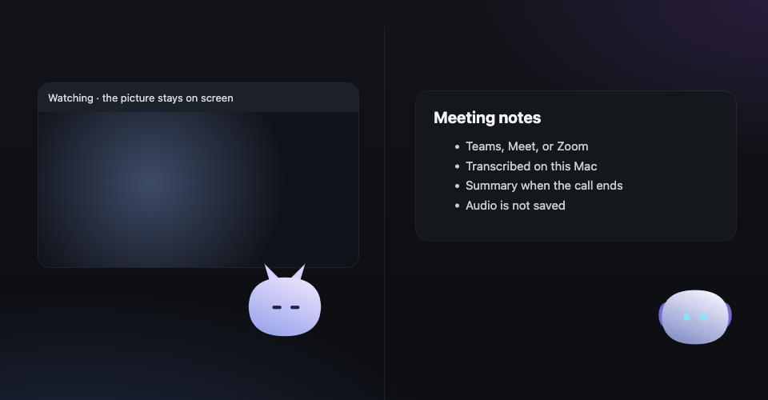

Native Mac app
A companion that lives in the notch
Viona sits in the MacBook notch and stays with whatever you are doing: a coding session, a song, a film, a meeting, or a mailbox you chose to connect. It is a local app. It does not ask you to create an account.
Privacy policy View the source
What you can do with it
Watch a coding session
Claude Code sessions show up in the notch: the project, the current step, and a request that needs a yes or a no.
Answer from the notch
Approve or refuse a permission, answer a question, or drop a file on the notch to ask about it. Sending a file by email still happens in your own Mail app, after you click.
Read accounts you connect
Stripe, GitHub, Vercel, Resend, Notion, Cal.com and n8n are optional. Viona reads them with the keys you save in the Keychain, and only to show them to you.
Read Gmail on your Mac
Connect one or more Google accounts and Viona reads those mailboxes from your Mac, so the notch can show what arrived. Access is read-only. Viona does not send Gmail for you.
Pick a different character
Choose Viona, Mochi, Nova, or Kitsu. Each companion keeps its own size, up to twice as large, when you drag her onto a window.
Dance to the music
While Music, Spotify, or a music tab is playing, she moves with it. Moods are chill, balanced, and energetic. An optional audio reading stays on your Mac and is never recorded.
Stay on top and keep dancing
Turn on “Sit on the front window” and she floats above the app you are using. Drag her anywhere and she stays there. Music keeps her dancing in that spot.
Watch a movie with you
A film on Netflix, YouTube, or a similar site switches her into a watching pose. She does not capture the picture, and the audio reading stays off so the stream is left alone.
Take meeting notes
When Teams, Google Meet, or Zoom is in front, she can transcribe the call on your Mac and ask your chat model for a summary when it ends. Notes are saved as a text file. The audio is not saved. Say “start notes” or “stop notes.”


